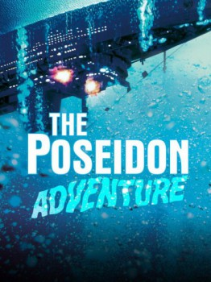

The Poseidon Adventure (1972)


Hell, upside down.

Country:United States, 117 minutes
Spoken languages:English
Genres:Adventure, Drama, Thriller
Director(s):Ronald Neame
Writer(s):Paul Gallico, Stirling Silliphant, Wendell Mayes
Video Codec:Unknown
Number: 3626
IMDb Rating:

Certification:PG
Storyline:
When their ocean liner capsizes, a group of passengers struggle to survive and escape.
Cast:
Gene Hackman (as Reverend Scott), Ernest Borgnine (as Mike Rogo), Stella Stevens (as Linda Rogo), Shelley Winters (as Belle Rosen), Jack Albertson (as Manny Rosen)
Medium: Media file,
Location: D:\The Poseidon Adventure\The.Poseidon.Adventure.1972.1080p.BluRay.x264.anoXmous.mp4
Loaned: No
Aspect ratio: Unknown